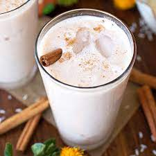

Horchata

Description
Horchata is a popular Mexican drink and my absolute favorite! The main ingredients
are rice, milk and cinnamon which make this a great drink for spicy meals.
It takes some work and a little patience to make but it's worth it.
Ingredients
- 1 cup of uncooked white rice
- 2 cinnamon sticks
- 1-12 oz can of evaporated milk
- 1-12 oz can of condensed milk
- 1/2 teaspoon vanilla
- 8 cups of warm water
- Sugar (to taste)
- Ground cinnamon (garnish/optional)
Steps
- We'll start off by washing and draining the white rice. Once you're done
you can place the rice into a bowl and add 4 cups of water. Add the cinnamon
sticks to the bowl but break them up in half first so you get more flavor out
of them. Cover the bowl and refrigerate it overnight. If you forgot to do this
the night before then you'll want to let the rice and cinnamon sticks soak for at
lest 4 hours.
- Once the rice and cinnamon has had plenty of time to soak it's time to remove
the sticks.
- Get your blender ready and add half of the water and rice. Blend it for about
4 minutes. You want to puree until it's smooth and has a paste like texture.
- Now get your pitcher and a very fine strainer ready. Pour the mixture into the pitcher and have the strainer catch as much of the solids as possible. You don't want to drink chunks of rice or cinnamon stick so be very careful here and make sure your strainer is right for the job. You can also use some cheese cloth for this step.
- Repeat the last 2 steps for the other half of the water and rice mixture. You're almost there!
- Add in the two cans of milk, the vanilla and the water. Stir well.
- Taste! If you want it to be sweeter then add some sugar to it but if you think it's too sweet then add some more water.
- Horchata is best served cold so set it back in the fridge for a while and serve it over ice. Be sure to stir it before serving and sprinkle some ground cinnamon onto it once served as a garnish.
- Enjoy!